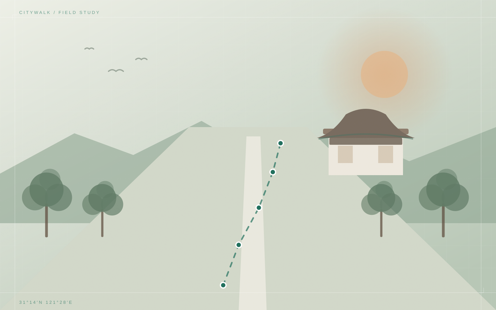

从一条街开始，走进城市的褶皱。我们为南京、北京、成都和大理整理了 12 条可以慢慢走完的城市路线。

颐和路 → 玄武湖 · 5 站
每座城市三条路线，历史、街区、自然与烟火气各有入口。选一个城市，先感受它的呼吸。
不用做攻略，挑一条喜欢的路线，点开就能看到沿途站点、时间与预算。
从一个模糊的周末念头，到一份能带出门的路线。只需要三步。
先别急着做攻略。看看城市封面，找到你当下想去的那种气质。
按主题、时长和预算筛选，路线已按步行顺序排好，打开即可出发。
把路线加入 1–3 天行程，自动排出时间与预算，最后导出带走。